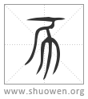

𢁓
古文亥爲豕，與豕同。亥而生子，復從一起。
清代 段玉裁《說文解字注》
- 荄也。十月微昜起接盛侌。
律曆志曰。該閡於亥。天文訓曰。亥者、閡也。釋名曰。亥、核也。收藏萬物。核取其好惡眞僞也。許云荄也者。荄、根也。陽氣根於下也。十月於卦爲坤。微陽從地中起接盛陰。卽壬下所云陰極陽生。故易曰。龍戰於野。戰者、接也。
- 从二。二、古文上字也。
謂陰在上也。
- 一人男、一人女也。
其下从二人。一人男、一人女。像乾道成男、坤道成女。
- 从𠃋。象褱子咳咳之形也。
咳與亥音同。胡改切。一部。
- 春秋傳曰。亥有二首六身。
左傳襄三十年文。孔氏左傳正義曰。二畫爲首。六畫爲身。按今篆法身衹有五畫。葢周時首二畫、下作六畫。與今篆法不同也。
- 古文亥。
各本篆體譌繆。今依宋本舊本更正。？？字皆與豕形略相似。
- 亥爲豕。
猶巳下云巳爲蛇也。
- 與豕同。
謂二篆之古文實一字也。豕之古文見九篇豕部。與亥古文無二字。故吕氏春秋曰。子夏之晉。過衞。有讀史記者曰晉師三豕涉河。子夏曰。非也。是己亥也。夫己與三相近。豕與亥相似。至於晉而問之。則曰晉師己亥渡河也。
- 亥而生子。復從一起。
此言始一終亥。亥終則復始一也。一下以韵語起。此以韵語終。
- ← 戌
- 无 →